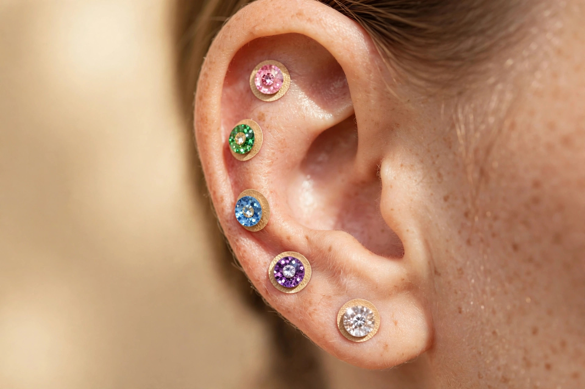

2026-11-07
耳ツボシードの貼り方 ― 自分で貼るときの5つの手順と失敗しないコツ
耳ツボシードを買ってみたものの、貼り方が合っているか不安な方へ。はがれやすい・位置がずれるといった失敗を避けるための、5つの手順とコツをまとめました。
トップ ＞ ブログ
耳ツボ専門店ミミル 梅田のブログです。自宅でできる耳ツボセルフケアの方法や、用品・素材の選び方を、初めての方にも分かりやすくまとめていきます。
2026-11-07
耳ツボシードを買ってみたものの、貼り方が合っているか不安な方へ。はがれやすい・位置がずれるといった失敗を避けるための、5つの手順とコツをまとめました。

2026-11-07
耳ツボジュエリーを楽しみたいけれど、金属アレルギーが心配。そんな方に向けて、金粒・チタン粒など素材の違いと、アレルギーがある人の始め方を解説します。

2026-11-07
ツボの図と自分の耳が合わず、位置がわからないと感じるときの探し方。エリアの絞り方から、綿棒で押して反応を見る手順までを紹介します。
このブログでは、耳ツボセルフケアの方法や用品の選び方、梅田の店舗からのお知らせを発信していきます。
耳ツボ専門店ミミル 梅田は近日開業予定です。開業のお知らせと予約受付の開始は、LINE公式アカウントでお知らせします。
LINEで友だち追加（開業のお知らせを受け取る）